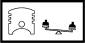
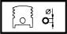

PISTON SET
- Path
- Technical Data > Manufacturing data > 10 ENGINE > 1028 PISTONS AND CONNECTING RODS > PISTON SET
- Kind
- technical data / specifications
- Applies to
- all engines; all production periods
- Interactive page
- https://sloeber94.github.io/elrnDB-lYpsln/en/#/2427756
Applies to: all engines; all production periods
Difference in weight between the pistons (g) | Validity |  | ||
|---|---|---|---|---|
± 8 | 1.3 JTD | |||
Gudgeon pin housing diameter (mm) | Validity |  | ||
22.990 ÷ 22.996 | 1.3 JTD | |||
Outer diameter (mm) | Validity |  | ||
Category B | Category C | Class A | ||
69.530 ÷ 69.540 | 69.540 ÷ 69.550 | 69.520 ÷ 69.530 | 1.3 JTD | |
Piston weight difference (g) | Validity | |||
± 5 | 1.4 16v | |||
Piston weight difference (g.) | Validity | |||
+- 5 | 1.2 16v 1.2 8v | |||